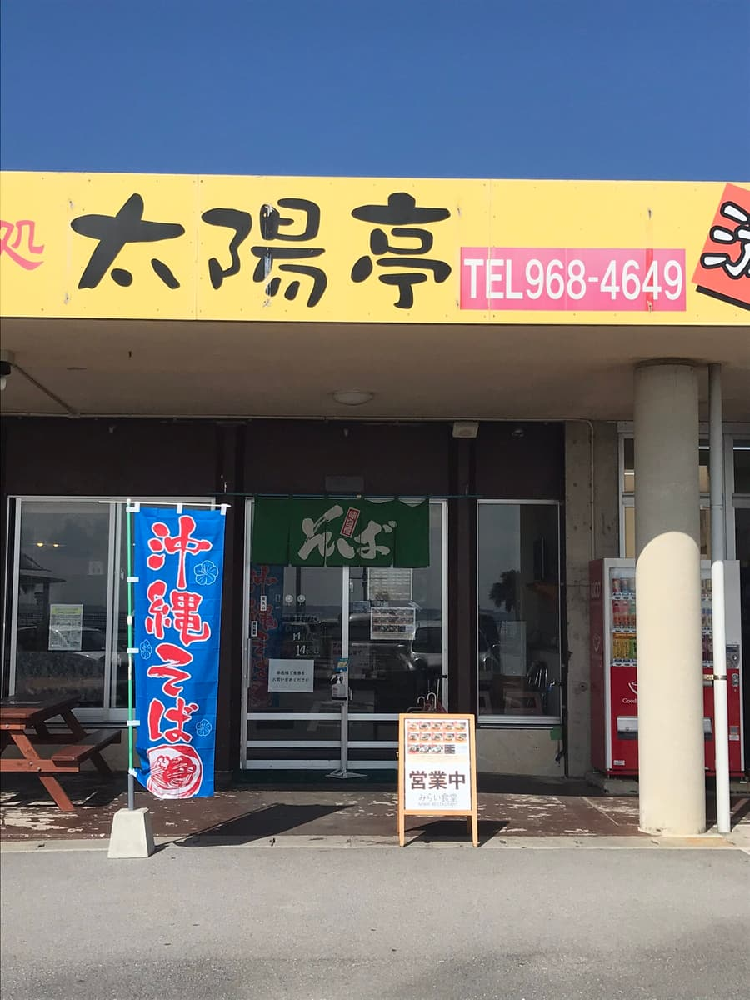
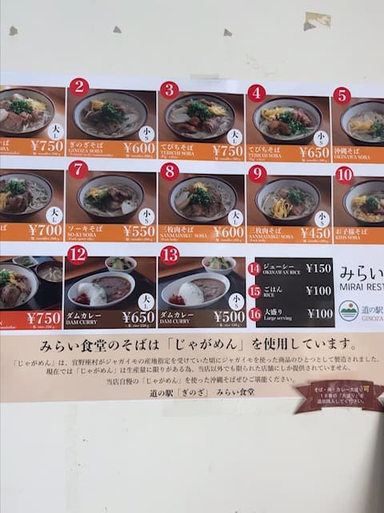
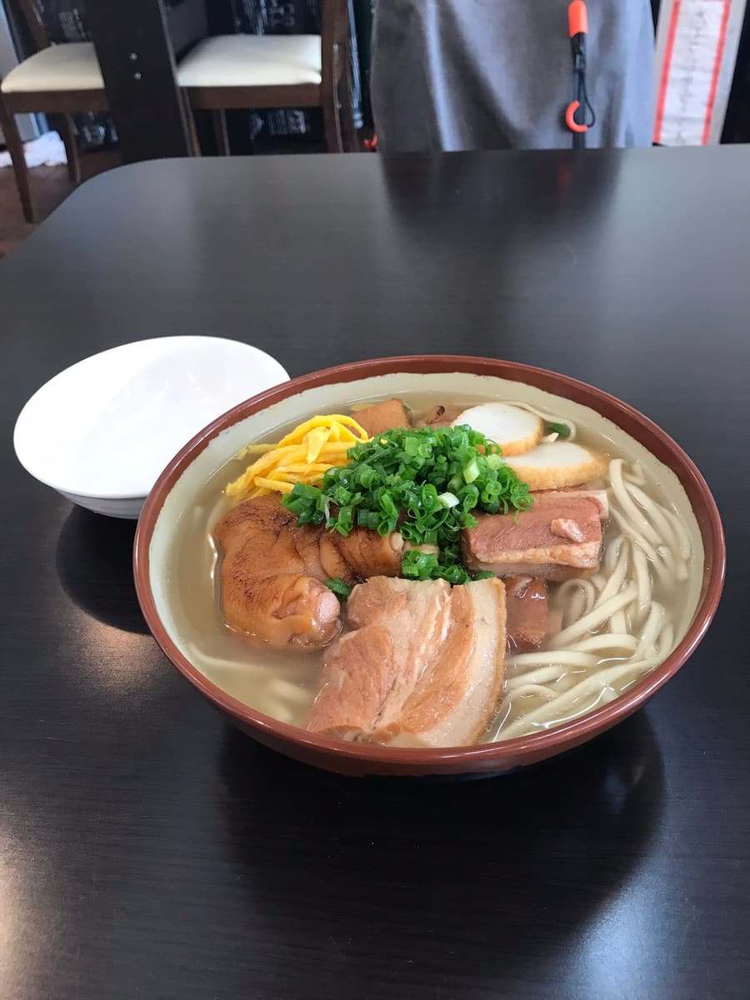

2021年1月吃的。
注）很遗憾，这家店现在已经歇业。作为纪录写下来。



我点了「ぎのざそば大」。面是用马铃薯做的中细面。汤头是鲣鱼高汤，很好喝😋 感觉和一般的面没什么差别^^; 配料有猪脚、三层肉、排骨、玉子烧，份量十足。
评分（9分/15分）：普通好吃，但歇业了很可惜。宜野座村以马铃薯之村来宣传，村内道路的路灯灯具都是「马铃薯」的造型，经过附近时请务必看看😁 现在好像变成一家叫「食堂まんじろう？」的店，说不定也有使用「じゃがめん」的冲绳面也不一定。
面：★★★☆☆（3）
汤头：★★★☆☆（3）
配料：★★★☆☆（3）